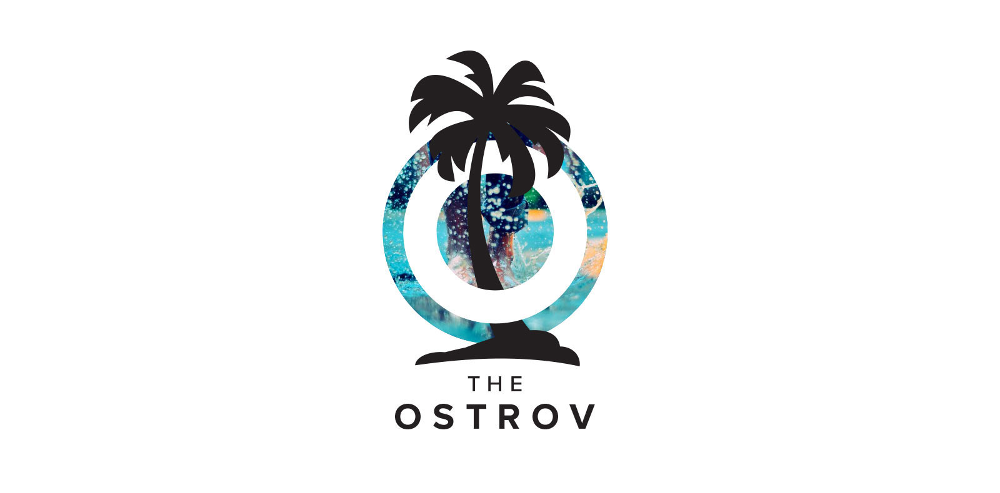
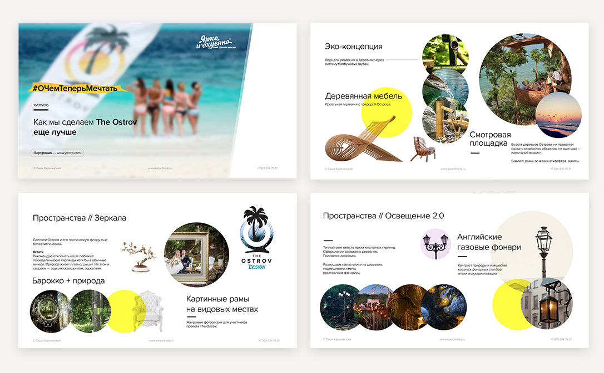

14 ноября 2015
#TheOstrov
Осенью 2015-го года уже ставшие мне друзьями Дмитрий Юрченко и Екатерина Иноземцева (Бренд ОЖ) решают запустить совершенно уникальный проект на Мальдивах.
«Остров — один из элементов холдинга здорового образа жизни ОЖ.
Это качественное и смысловое приключение для качественной, осмысленной жизни».
Динамический логотип

Сроки: 1 неделя
Результат — серия логотипов #TheOstrov и концепция развития проекта
Основной знак
В логотипе проработано прямое наследование стиля родительского бренда — ОЖ
Знак в реальном мире
Фотографировать было не то чтобы некогда: на Острове действовало правило мобильного детокса — все участники проекта сдали телефоны в первый же день. И, поверьте, оно того стоило!
Но, конечно, была отличная команда операторов. И вот уже появилось несколько роликов. Полнометражный фильм находится на стадии пост-продакшна и выйдет в марте.
Разработка концепции
Несколько слайдов из презентация

Выход за рамки дизайна — моя давняя мечта. И, наконец, она осуществилась.
Концепция благоустройства Острова — это своего рода тоже челлендж.
И я безусловно горжусь результатом.

Процесс
Несколько идей логотипа из «Процесса», которые я предложил.
Литера О и стрелка компаса:
Еще несколько вариантов:
Дизайн лендинга для привлечения инвестиций в проект
 Но знаете, что самое главное?
Но знаете, что самое главное?Счастливые люди!


Организатор #TheOstrov
Чего хочет заказчик от исполнителя? Чтобы он задавал как можно меньше вопросов, понимал всё с полуслова и удивлял как можно чаще. Мы все взрослые люди и понимаем, что это невозможно. Однако в жизни есть место чудесам и чудесным людям. Саша определённо умеет создавать чудеса.
[...]
В общем, ребята, это счастье от совместного творчества и взаимопонимания.
От всей души желаю каждому заказчику когда-нибудь встретить своего Пигмалиона!